舉辦強化從者能力的特別關卡「從者強化關卡」的第14彈！
本次為了記念「Fate/Grand Order ～6th Anniversary～」的舉辦，合計14位從者的強化關卡永久追加！
對象從者的強化關卡連續7天在迦勒底之門開放。
不僅進行對象從者的強化，也可獲得聖晶石做為關卡通過報酬。
※請注意在從者強化關卡沒有文字冒險部份。
◆追加時間◆
2021年8月1日(日) 18:00～
◆開放條件◆
持有的強化對象從者，必須使其最終再臨。
※未持有對象從者的話，不會出現關卡。
※關卡沒有舉辦期限。


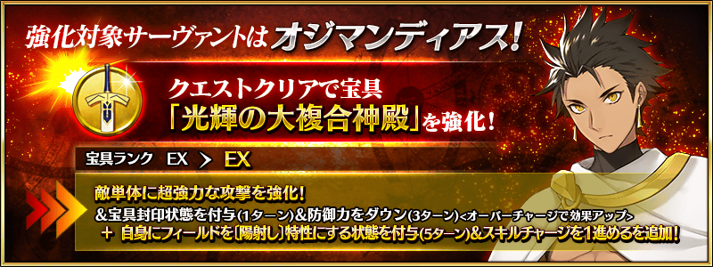
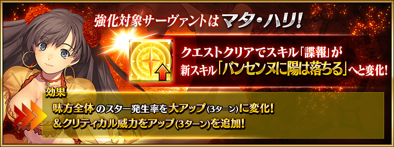
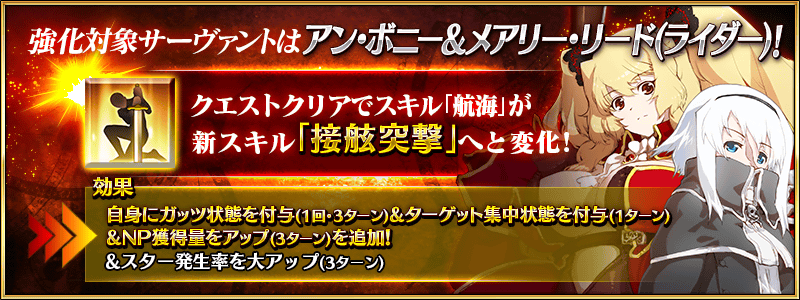
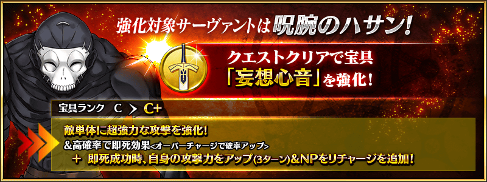
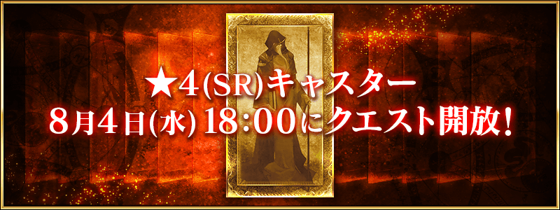
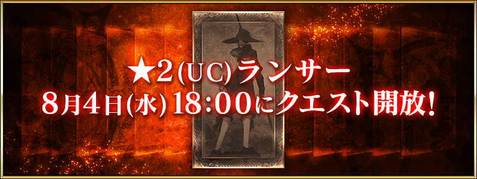
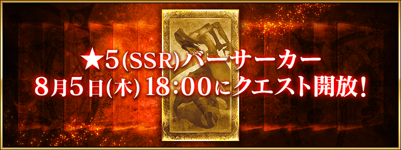
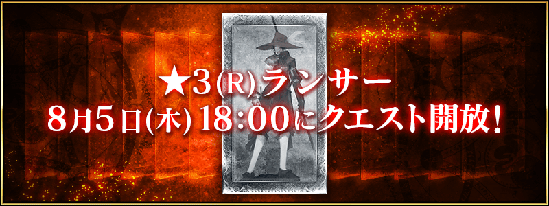
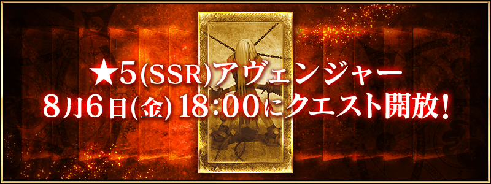
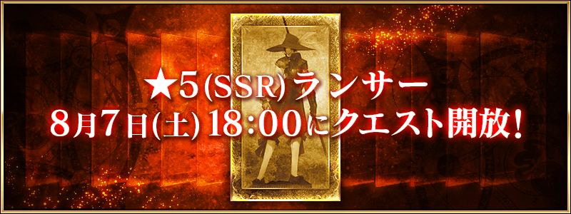
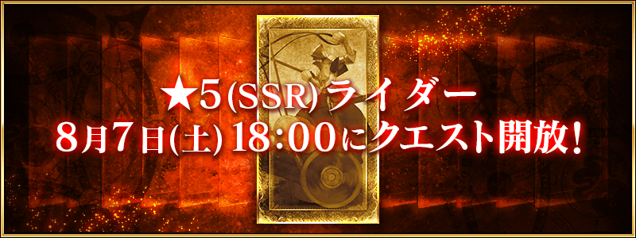
其他還有，
・Fate/Grand Order ～6th Anniversary～
・「Fate/Grand Order Fes. 2021 ～6th Anniversary～」舉辦記念宣傳活動
・6周年記念Pick Up召喚(每日交替)
以期間限定同時舉辦！
關於詳情，請自下述橫幅確認。
■「Fate/Grand Order ～6th Anniversary～」詳細情報

■「Fate/Grand Order Fes. 2021 ～6th Anniversary～」舉辦記念宣傳活動詳細情報

■「6周年記念Pick Up召喚(每日交替)」詳細情報